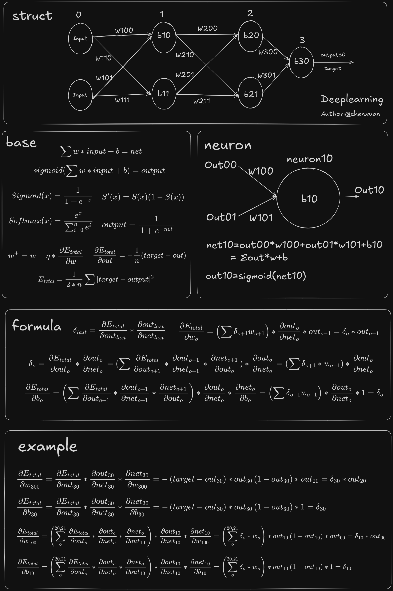

第 6 章 · 学习是怎么发生的
反向传播
第 5 章我们知道了“朝梯度反方向走”就能降低损失。可网络动辄成千上万个参数, 这么多梯度怎么算?反向传播(backpropagation)就是那个高效算法。 它常被传得很神秘,但其实只是一个东西:链式法则,加一点耐心。
读完这一章,你会明白
- 链式法则的直觉:把“最终的错”一段段分配责任回去;
- 反向传播的三步:从输出误差出发 → 逐层往回传 → 算出每个权重和偏置的梯度;
- 怎么按真实计算顺序,把配套速查图里的公式(含 w 和 b)一条条现场推出来(而不是死记);
- 为什么一层前向其实就是一次矩阵乘法,w 是每层一整块矩阵(MNIST 摊开就是三次矩阵乘);
- 为什么前向时要存下每层的 z(第 3 章那个伏笔);
- 逐行读懂真实的反向传播实现;
- 矩阵怎么求导:为什么
∂L/∂W = Xᵀ·G,以及它凭什么等于“一堆 MNIST 式标量求导打包成一次矩阵乘”——这是大模型梯度不爆炸的关键。 - 怎么证明自己的反向传播没算错:用梯度检验拿“笨办法”数值梯度去对账,以及 autograd 和你手写的反向传播到底是什么关系。
1. 链式法则:一段段地追责任
先看最简单的情形:一个参数 w,它影响 z,z 影响激活值 a, a 最终影响损失 L。这是一条“影响链”:
前向:w → z → a → L。反向:把 L 的误差,按每一段的局部导数连乘,传回 w。
要知道“w 动一点,L 会变多少”,链式法则说:把这条链上每一段的局部导数乘起来:
偏置 b 更省事。一个神经元里 z = Σ w·a + b, 对 b 求导时那些带 w 的项都是常数、导数为 0,只剩 b 自己,系数是 1——也就是 ∂z/∂b = 1。 于是同一条链走到最后一段换成 1,偏置的梯度就直接等于 ∂L/∂z(也就是下一节要反复出现的 δ),连输入都不用再乘:
像追查一次生产事故的责任:最终的损失(成品报废)要追到某个工人(参数)头上, 得沿着流水线一站站往回问“你这一步对最终结果影响多大”,把这些“影响”乘起来, 就得到这个工人应负的总责任。反向传播,就是给每个参数同时做这件追责。
2. 反向传播的三步
把上面的思路推广到整张多层网络,就是干净利落的三步。我们引入一个中间量 δ(delta),表示“某个神经元对最终损失的责任”。
第一步:从输出层的误差开始
反向传播的起点是最后一层。它的 δ 由“损失对输出的导数”乘上“激活函数的导数”得到:
还记得第 4 章那个美妙巧合吗?如果用 softmax + 交叉熵,这一步直接简化成 δ = p − t。
第二步:把误差一层层往回传
有了后一层的 δ,前一层的 δ 就能算出来:把后一层的责任,按连接它们的权重“分摊”回来,再乘上本层激活的导数:
第三步:用 δ 算出每个参数的梯度
一旦每个神经元都有了自己的 δ,梯度就唾手可得——权重的梯度,是“它两端的 δ 和输入”的乘积;偏置的梯度,就是 δ 本身(还记得吗?偏置那段局部导数是 1):
这三步就是反向传播的全部骨架。但光看通用公式容易“懂了又没懂”。 所以下面先拿一张真实的速查图、带具体下标,把每个 δ、每根 w、每个 b 的梯度按真实计算顺序现场推一遍; 推完再用动画把整个流动回放一遍(误差怎么从末层反着流回来)——你会看到,推来推去都没跳出这三步。
3. 跟着速查图,按真实计算顺序推一遍
链式法则(第 1 节)和三步框架(第 2 节)都到手了,现在拿它们去啃一张真实的速查图:把抽象公式落到具体下标上。
这张图乍看是一堵“公式墙”,分成 struct / base / neuron / formula / example 五块。
但这五块只是速查时的分区,不是计算顺序——base 把零件摊在那儿,formula 写通用模板,example 才代入具体下标。
真要看懂,得按一次训练真正发生的顺序走:前向逐个神经元算 → 到输出算损失 → 从末层往回推每个梯度 → 最后才更新参数。
下面就按这个顺序,用刚学的链式法则,把图里的公式一条条现场推出来——每冒出一条,都先说清“这一步为什么需要它”。

别按区块顺序读;跟着下面第 1~5 步走,在图上找到对应位置即可。
读图约定:先认下标(struct 区)
图左上 struct 是一张缩小版 MLP,和仓库里 MNIST 的 784→128→64→10 同类,只是画小了方便手算:
- 第 0 层(输入):2 个输入,值记作 out00、out01。
- 第 1、2 层(隐藏):各 2 个神经元 b10/b11、b20/b21。
- 第 3 层(输出):1 个神经元 b30,输出 out30,拿去和
target比。
权重 w 的三位下标 = 连到第几层 / 本层第几个神经元 / 上一层第几个输入。 例:w100 是“输入 0 → 第 1 层 0 号”那根线;w210 是“第 1 层 0 号 → 第 2 层 1 号”。 out20 则是第 2 层 0 号神经元的输出。认准这套记法,后面每条公式都能在图上指出来。
第 1 步 · 前向:一个神经元怎么算(neuron 区 + base 前两行)
前向时数据从左往右流。以第 1 层 0 号神经元为例,它只干两件事——先把连进来的输入加权求和,再过一次激活函数:
out10 = sigmoid(net10) 就是 base 里 “Σ w·input+b = net” 和 “sigmoid(net) = output” 落到 neuron10 上(图 neuron 区)
每个神经元都这么算:第 1 层算完喂给第 2 层,第 2 层喂给第 3 层,一路到 out30。
一个要记住的细节:算 net 时顺手把它存下来(代码里的 neuron_preact_,见第 3 章),第 3、4 步反向求导还要回头用它。
第 2 步 · 前向到头,量一下错得多离谱(base 的 Etotal)
数据流到输出层,out30 就是这次的预测。拿它和 target 比,用均方误差(MSE)压成一个数:
这个标量就是“错得多离谱”。想让它变小,就得知道每个权重该往哪调、调多少——也就是对每个 w 求 ∂E∂w。正是这一问,才逼出下面的反向传播。
(图 base 区还列了 Softmax:本图单输出配 MSE,用不到它;多分类如 MNIST 10 类才用 softmax 把多个 net 变成概率分布,见第 23 章。)
第 3 步 · 反向第一站:输出层的 w300 和 b30(base 的 ∂E/∂out、S′ → example A)
损失有了,现在要梯度。先挑最靠近损失的一根权重 w300——它只经一条路影响损失:w300 → net30 → out30 → E。链式法则把这条路上三段局部导数连乘:
三段挨个算,零件全在 base 区现成:
- ∂E/∂out30 = −(target − out30) —— 对第 2 步的 MSE 求导,得 base 里的 −1n(target−out),n=1 就是它。预测比目标大时为正,提示“该往下调”。
- ∂out30/∂net30 = out30(1 − out30) —— 因为 out30=sigmoid(net30),直接套 base 里的 S′(x)=S(x)(1−S(x))。
- ∂net30/∂w300 = out20 —— 因为 net30 = out20·w300 + out21·w301 + b30,对 w300 求导只剩它的系数 out20。
把前两段(只跟这个神经元自己有关、后面反复要用)打包起个名字叫 δ30,连乘就收成一行:
∂E/∂w300 = δ30 · out20 ∂E/∂b30 = δ30 这就是图 example 区头两行
那 b30 的梯度怎么来的? 一模一样的链子,只是最后一段换成偏置:
b30 → net30 → out30 → E。前两段和 w300 共用,正是 δ30;
最后一段回到第 1 步那个式子 net30 = … + b30,对 b30 求导 = 1。所以
∂E/∂b30 = δ30 · 1 = δ30——偏置梯度就等于它自己神经元的 δ,连 out 都不用乘。
图 formula 区那句 δlast = ∂E/∂outlast · ∂outlast/∂netlast,不过是给“前两段乘积”起的通用名而已。
第 4 步 · 反向往里走:隐藏层的 w100 和 b10(formula 的 δ 递推 → example B)
再挑一根深处的 w100。它离损失远,而且 out10 同时连去第 2 层两个神经元(b20、b21), 所以它对损失的影响要把两条路加起来。整条链照样连乘:
难点只在第一段 ∂E/∂out10:out10 要经 b20、b21 才影响到 E,于是把这两条路求和:
另外两段照旧:∂out10/∂net10 = out10(1−out10),∂net10/∂w100 = out00。三段合起来,同样打包出 δ10:
∂E/∂w100 = δ10 · out00 ∂E/∂b10 = δ10 这就是图 example 区后两行;formula 区通用式 δo=(Σ δo+1·wo+1)·∂outo/∂neto 就是它的模板
b10 的梯度也一并说清(这根最容易被跳过):偏置走的链子是 b10 → net10 → out10 → …… → E,
和 w100 共用后面全部路段,唯一不同还是最后一段——回到第 1 步
net10 = out00·w100 + out01·w101 + b10,
对 b10 求导,带 w 的项全变 0,只剩系数 1,即 ∂net10/∂b10 = 1。
于是 ∂E/∂b10 = δ10 · 1 = δ10。
规律一句话:任何一根偏置的梯度,都等于它所在神经元的 δ;权重才要再乘一个“上一层输入”。
算 δ10 得先有 δ20、δ21;要它们又得先有 δ30。
所以只能从末层往前一层层算——前一层刚算出的 δ,正好喂给更前面一层用。
这就是“反向”传播名字的由来,也是它高效的原因:每个 δ 只算一次,之后重复利用。
对应代码里的倒序循环 for (l = last-1; l >= 1; l--)。
第 5 步 · 梯度全到手,最后才更新(base 的 w⁺)
把每一层都这么从后往前扫一遍,网络里每个 w、每个 b 都拿到了自己的梯度。到这一步,也只有到这一步,才轮到更新参数:
注意 w⁺ 虽然写在 base 区里,却是整个流程最后才发生的一步。“反传求梯度”和“更新参数”是两码事——具体怎么挪,见第 5 章的梯度下降和第 8 章的各种优化器。
①前向 每个神经元 net→out,逐层算到 out30(neuron 区 / base 前两行) →
②损失 Etotal 量误差(base) →
③④反向 δ 从末层往前推,顺手得每根 w、b 的梯度(formula 写通用式,example 代入下标) →
⑤更新 w⁺ = w − η·∂E/∂w(base)。
速查图五块只是把这五步用到的零件分门别类摆好;MNIST 的 784→128→64→10 也只是把输入变宽、层加深,这套顺序一字不改。
退一步:w 其实是矩阵,一层前向就是一次矩阵乘法
第 1 步我们盯着一个神经元算 net10 = out00·w100 + out01·w101 + b10。 现在退一步,把同一层的所有神经元一起看——你会发现刚才那一堆加权求和,其实是一次矩阵乘法, 而 w 根本不是零散的一根根线,而是一整块矩阵。
还是用速查图那个小网络。第 1 层有两个神经元(b10、b11), 上一层是两个输入(out00、out01)。第 1 步我们只写了 0 号神经元的 net10, 现在把 1 号神经元 net11 = out00·w110 + out01·w111 + b11 也并排写下来:
net11 = w110·out00 + w111·out01 + b11 两行长得一模一样,只是换了神经元下标——这种“同一个模板重复很多遍”正是矩阵乘法的信号
把这两行“打包”:所有 w 排成一块 2×2 的矩阵 W1(第 o 行 = 第 o 号神经元的两根权重),
输入排成竖着的一列 [2×1],偏置也是一列。于是两行加权求和收成一个矩阵 × 向量:
验证一下矩阵第 1 行:[w₁₀₀ w₁₀₁] · [out₀₀; out₀₁] = w₁₀₀·out₀₀ + w₁₀₁·out₀₁,再加 b10——
正是上面 net10 那一行。矩阵乘法没算任何新东西,只是把“逐个神经元的加权求和”一次性摆平。
所以那块 W1 就是仓库代码里的 neuron_weight_[1],neuron_weight_[1][o][i] 就是它第 o 行第 i 列。写成通用形式:
[本层神经元数 × 上一层神经元数]
光看一层还不够。把这个小网络从输入一路乘到输出走一遍,你就能看清数据的“维度”是怎么被每层矩阵一步步改写的。
它的结构是 2 → 2 → 2 → 1:2 个输入,两个隐藏层各 2 个神经元,最后 1 个输出。每层都是“矩阵 × 上一层的列向量 + 偏置,再过激活”,前一层的输出正好插进后一层做输入:
把这四步接起来看,维度是一条被矩阵改写的流水线:
[2×1] ──W1──▸ [2×1]
──W2──▸ [2×1]
──W3──▸ [1×1]。
每层 W 的行数 = 本层要输出几维、列数 = 上一层进来几维;
相邻两层“列对行”严丝合缝(前一层输出 2 维,后一层 W 就得有 2 列),这正是第 1 章 4.3 的形状规则“中间对齐、两头留下”在整张网络上的连锁体现。
小网络里每个 W 只是 2×2 或 1×2,换成仓库那个 MNIST 网络 784→128→64→10,公式一字不改,只是每层的行列数换成真实维度——同一条“维度流水线”变长、变宽而已:
| 这一层 | 权重矩阵 W | 这一层的运算(矩阵 × 列向量)→ 输出 |
|---|---|---|
| 输入 | — | 一张图拉直成 [784×1] 一列 |
| 第 1 层 | W1 [128×784] | [128×784]·[784×1]=[128×1],过 ReLU |
| 第 2 层 | W2 [64×128] | [64×128]·[128×1]=[64×1],过 ReLU |
| 输出层 | W3 [10×64] | [10×64]·[64×1]=[10×1],再 softmax |
和上面 2×2 那步形状规则完全一致(中间对齐、两头留下);784 维进、10 维概率出。
再把一整批样本(第 5 章的 minibatch)按行堆成一个矩阵 X [B×784],
那连“逐个样本”的循环都省了,一层前向直接是矩阵 × 矩阵:
[B×784]·[784×128] = [B×128]
一批 B 张图一次算完;这种“矩阵×矩阵”就是所谓 GEMM,也是 GPU 能大规模并行加速的根本(第 21 章)
仓库的 ForwardPropagationBatch 为了不依赖矩阵库,把这次矩阵乘拆成了三重 for 循环(逐样本、逐神经元、逐输入)一个个标量地累加——
但它算的东西,一字不差就是上面的 W·out。所以“深度学习本质是海量矩阵乘法”这句话,落到这个仓库就是那几行循环。
这也埋下一个悬念:前向是矩阵乘,那反向求梯度呢?往后到第 6 节就会看到,
梯度 ∂L/∂W = Xᵀ·G 同样是一次矩阵乘——前向、反向,从头到尾都是矩阵在动。
4. 边看动画边回放一遍
公式一条条推完了,难免还是有点“只见树木”。再回过头看它整体动起来:还是那个动画(和第 3 章前向同一个),这次请点 “切到反向传播”,再一步步点 “下一步”。 刚才第 3 节逐个下标推的 δ,在这里就是那束从输出层反着流回输入层的暖色信号——它传的不是数据,而是“误差/责任”。 你还可以 hover 公式里的彩色项,看它对应网络里的哪个节点或哪条边,把“推导”和“流动”对上号。
前向(蓝绿)把数据往前算;反向(暖色)把误差往回传。两趟合起来,就是一次完整的训练步。
5. 逐行读懂反向传播
真实代码就是上面三步的忠实翻译。第一步:末层的 δ。
if (use_softmax) {
delta = softmax_function_->CalcDelta(output, target, loss_function_); 1
} else {
double dL = loss_function_->DerivLoss(target, output) / out_dim; 2
delta = dL * activate_function_->DerivActivate(preact, output); 3
}
neuron_delta_[last][b][o] = delta; 4- 若是 softmax + 交叉熵,直接用那个漂亮结果 δ = p − t。
- 否则,先算损失对输出的导数
DerivLoss(第 4 章)。 - 再乘上激活函数的导数
DerivActivate。注意它同时用到了preact(也就是前向存下的 z)和output——这就是第 2、3 章埋的伏笔:有些激活(如 GELU)必须知道 z 才能求导。 - 把末层每个神经元的 δ 存进
neuron_delta_,作为往回传的起点。
第二步:把 δ 一层层往回传。
for (int l = last - 1; l >= 1; l--) { 1
for (int o = 0; o < layer_[l]; o++) {
double sum = 0.0;
for (int k = 0; k < layer_[l + 1]; k++)
sum += neuron_weight_[l + 1][k][o]
* neuron_delta_[l + 1][b][k]; 2
neuron_delta_[l][b][o] =
sum * activate_function_->DerivActivate(
neuron_preact_[l][b][o],
neuron_output_[l][b][o]); 3
}
}- 注意循环方向:
l从倒数第二层往前走到第 1 层——这就是“反向”二字的由来。 - 把后一层每个神经元的责任
δ,乘上连接的权重,累加起来——这正是公式里的 WTδ,把后层责任分摊回当前神经元。 - 再乘上当前层激活的导数,得到当前层的 δ。这一行就是 δl = (WTδ) ⊙ f′(z)。
第三步:用 δ 把梯度累加出来。
for (int l = 1; l < L; l++) {
const auto &in_vec = neuron_output_[l - 1][b];
for (int o = 0; o < layer_[l]; o++) {
double d = neuron_delta_[l][b][o];
grad_bias_[l][o] += d; 1
for (int i = 0; i < layer_[l - 1]; i++)
grad_weight_[l][o][i] += d * in_vec[i]; 2
}
}- 偏置的梯度,就是这个神经元的 δ 本身(对应公式 ∂L/∂b = δ)——和第 3 节、第 3~4 步推的完全一致,代码里就一句
grad_bias_[l][o] += d。 - 权重的梯度,是 δ 乘以“上一层对应的输入”(对应 ∂L/∂w = δ·a)。注意是
+=:一批里每个样本都累加进来,最后在ApplyGradient里除以B取平均(第 5 章)。
把这一章和前几章串起来:前向算出预测(第 3 章)→ 损失衡量错误(第 4 章)→ 反向算出每个参数的梯度(本章)→ 优化器按梯度更新参数(第 5 章)。 这四步循环成千上万次,网络就“学”会了。这就是第 0 章那个训练循环的完整真相。
反向传播只做一件事——算出每个参数的梯度(“该往哪调、调多少”的建议)。
至于真正怎么挪参数,是优化器的活儿(第 8 章):SGD 直接 w −= 学习率 × 梯度,
Adam 则用动量 + 自适应步长。所以“反传”和“更新”是两个步骤,别混为一谈——
在很多框架里它们也确实是分开的两次调用(先 backward() 求梯度,再 optimizer.step() 更新)。
6. 从一个数到一整块:矩阵是怎么求导的
到这里你可能有个很实在的困惑:上面推的 δ·a 全是一个数对一个数求导(和 MNIST 里那个 double 一样)。
可到了第 18 章的 Transformer,一层就是 Y = X·W——X 是矩阵、W 是矩阵、输出还是矩阵。
那“矩阵对矩阵求导”是个什么怪物?导数难道是个四维的东西?这一节把它讲穿。(其中“梯度和参数同形状、Xᵀ·G 怎么来的”这套数学基础,第 1 章 §7 已经先垫过,这里落到反向传播上。)
记住一条铁律:梯度永远和参数本身同形状。W 是 [d×d] 的矩阵,那 ∂L/∂W 也就是个 [d×d] 的矩阵——
里面每一个 ∂L/∂W[i][j] 都只是一个普通的数,就是“loss 对这一个权重的偏导”,和 MNIST 那个 double 一模一样。
所以“对矩阵求导”不是新东西,它只是把 d×d 个“MNIST 式的标量求导”打包放进一张同样大小的表。
你不是在对“矩阵”求导,你是在同时对矩阵里每个格子求导,结果自然排成同样形状的一张表。
从单个权重推起:还是那条链式法则
拿一层 Y = X·W。先只盯一个权重 Wkj(纯 MNIST 式,一个 double)。前向时,输出矩阵的某个元素是一次点积:
现在问:Wkj 这一个数动一点,loss 变多少?套链式法则(和 MNIST 一字不差), 只是要把它影响到的所有输出位置 Yij 的责任都加起来:
关键在最右边那个 Σi Xik·Gij——它正好就是矩阵乘法 Xᵀ·G 的第 [k][j] 个元素!
于是把所有 k、j 一起写,一整块 W 的梯度就是:
你本来要对 d×d 个权重逐个做 MNIST 式求导,但因为每个格子的公式长得一模一样、只是下标不同,
它们天然拼成了一次矩阵乘法。矩阵求导不是一套新规则,而是把一大堆相同的标量求导“批发”成一次矩阵运算。
这也顺带回答了一个常见担心:更新 W 里几百万个参数,不是循环几百万次,而是一次矩阵乘——GPU 一步就刷完。
落到那个小网络:反向每一步的矩阵长什么样
抽象的 Xᵀ·G 你可能还是没画面。我们把它落到第 3 节那个小网络——同样是 2→2→2→1、同样的下标。前向时我们已看到每层是 netl = Wl·outl−1;现在反向,把每一步的矩阵形状摆出来看(单个样本,所以“批”那一维是 1)。
先看输出层 W3(形状 [1×2])。 末层只有 1 个神经元,它的责任就是一个数 δ30(第 3 步已算过);上一层输出 out2 = [out20, out21]。梯度 = δ 这一列 × 输入那一行(外积),形状自然凑成和 W3 一样的 [1×2]:
往前一层要先拿到第 2 层的责任 δ2 = [δ20, δ21]。它由“把末层责任经 W3 分回来、再乘本层激活导数”得到——这正是三步框架第二步的 δl = (Wl+1T·δl+1) ⊙ f′,把形状摆出来:
再看第 1 层 W1(形状 [2×2]),它离损失最远,但公式一模一样:本层责任 δ1 = [δ10, δ11](竖列),输入 out0 = [out00, out01](横行),外积出 [2×2]:
对上号了吗?你在第 3 节逐个下标手推的每个 ∂E/∂w,就是这些矩阵里的一个格子。
把这一层所有格子一起写,就是一次“δ 列 × 输入行”的外积;而当有一整批 B 个样本时,这个外积对每个样本累加,正好合并成 Xᵀ·G 那一次矩阵乘——所以下面的通用公式,和你手推的小网络是同一件事,只是把批和维度铺开了。
| 这一层 | δ(责任) | 输入 | ∂L/∂W = δ·输入ᵀ |
|---|---|---|---|
| 输出层 W3 [1×2] | [1×1] | out2 [1×2] | [1×1]·[1×2] = [1×2] ✓ |
| 第 2 层 W2 [2×2] | [2×1] | out1 [1×2] | [2×1]·[1×2] = [2×2] ✓ |
| 第 1 层 W1 [2×2] | [2×1] | out0 [1×2] | [2×1]·[1×2] = [2×2] ✓ |
每层的梯度形状,永远和这层的 W 一模一样——这就是上面“梯度和参数同形状”那条铁律,在小网络里逐层验了一遍。
线性层的“反向三件套”与形状对齐
于是 Y = X·W 这一层,反向时收到上游 G = ∂L/∂Y,本地只需算两样(偏置略):
怎么记住谁转置、谁乘谁?一个特别好用的窍门:梯度必须和它对应的东西同形状,反过来用形状凑就行。
设 X 是 [n×d]、W 是 [d×d],那 G 和 Y 同形状也是 [n×d]:
| 要算的梯度 | 必须的形状 | 只有这么乘才对 |
|---|---|---|
∂L/∂W | [d×d](同 W) | Xᵀ·G = [d×n]·[n×d] = [d×d] ✓ |
∂L/∂X | [n×d](同 X) | G·Wᵀ = [n×d]·[d×d] = [n×d] ✓ |
形状对齐几乎唯一地决定了公式长什么样——这也是工程上很少把反向公式推错的原因:凑不出正确形状的写法,一定是错的。
| MNIST(标量) | Transformer(矩阵) | |
|---|---|---|
| 参数 | 一个数 w | 一块 W [d×d] |
| 它的梯度 | 一个数 ∂L/∂w | 一块 ∂L/∂W,同样 [d×d],每格是个标量偏导 |
| 怎么算 | δ·x(一次乘) | Xᵀ·G(一次矩阵乘 = 把所有 δ·x 批量做完) |
| 本质 | 链式法则 | 同一个链式法则,只是打包成矩阵 |
所以“大模型的梯度”听着玄,拆开就是这张表:MNIST 的标量求导 × 打包成矩阵乘。
整个几十层的大模型,反向传播就是把这套“收到上游 G → 本地算 Xᵀ·G 和 G·Wᵀ → 把 G·Wᵀ 往前传”在每一层接力一遍。
从 loss 出发倒着扫一遍,所有层、所有参数的梯度就都齐了——代价大约只等于 2 次前向传播(注意这是相对前向的倍数:模型越大、序列越长,前向和反向的绝对计算量都会跟着涨,但反向始终只是前向的常数倍,不会额外多出一层指数级膨胀)。
真实框架里这套“记住前向每一步、反向自动套用局部公式”的机制叫 自动微分(autograd),所以工程师只写前向,从不手推几十亿参数的梯度。
(第 20 章那个 FLOPs ≈ 6 × 参数 × token 的“6”,拆开就是前向 2 + 反向 4——反向按算力算比前向再贵一点,但仍是常数倍,不随参数量膨胀。)
本书的代码里,每个模块都自己写了一对 Forward / Backward:前向时顺手存下反向要用的东西(z、输入 X),反向时收到上游的 G,套本地公式算出参数梯度,再把输入梯度往前传。
autograd 做的事情一模一样,只是把“谁连着谁”交给程序自动记录:
- 前向时记账:每做一次运算(乘法、加法、softmax……),就在一张计算图上记下一个节点:输入是谁、输出是谁、本地导数公式是什么。
- 反向时倒着走图:从 loss 出发,按和前向相反的顺序访问每个节点,调用它的本地公式——这正是上面
for (l = last-1; l >= 1; l--)那个倒序循环,只不过循环的对象从“层”变成了“图上任意节点”。 - 一个值被用了多次,梯度就相加:比如残差连接里的 x 既走进子层、又直接加到输出上,两条路传回来的梯度要加在一起。手写时你得自己记得加,autograd 自动替你加。
所以手写反向传播 ≈ 手工接好的计算图;PyTorch 里一句 loss.backward() ≈ 自动接线。想亲手写一个最小版本,推荐读 Karpathy 的
micrograd:不到 200 行 Python,只支持标量,却把计算图 + 倒序传播讲得一清二楚。读完再回来看本章,会发现两者是同一件事。
算梯度只要约 2 倍前向,所以“为几十亿参数求导”本身并不会额外炸掉——大模型训练真正砸钱砸算力之外,还另有几处工程难点:
- ① 显存——反向要用到前向存下的中间激活值,层多序列长时能吃光显存。解法是 gradient checkpointing:反向时重算一部分激活,拿算力换显存。
- ② 数值稳定——梯度穿过很多层连乘,可能爆炸或消失,这正是残差连接、LayerNorm 和第 9 章梯度裁剪要解决的。
- ③ 多卡同步——梯度要在上千张卡间 AllReduce 求平均(第 21 章)。
换句话说:原始算力本身当然是大头开销,但反向传播并没有在前向之外再叠一层新的算力爆炸;显存、数值稳定、多卡同步这三样,才是“反向”额外带来的头疼事。
7. 怎么证明反向传播没算错:梯度检验
手写反向传播有个很阴险的地方:算错了往往不报错。漏乘一个系数、转置放错一处,程序照样跑,loss 也照样往下掉——只是掉得慢一点、最后差一点。 你很难从训练曲线上看出“这里少了个 0.9”。所以要有一个独立于反向公式的办法来对账。
这个办法就藏在导数的定义里(第 1 章):导数就是“参数动一点点,输出变多少”。 那就真的动一下:把某个参数 w 往上推一点、往下推一点,各跑一次前向,看 loss 差多少。
这个“数值梯度”只用到前向,完全不碰你推的反向公式——所以它和反向传播算出的“解析梯度”一旦对不上,就说明反向公式错了。 这就是梯度检验(gradient check)。
对账规则:看相对误差
两个梯度的绝对大小可能差很多(有的 10⁻⁶,有的 10³),所以不看绝对差,看相对误差:
还有个小问题:Transformer 一层的输出是个矩阵,不是一个 loss 标量,怎么检验?窍门是随机造一个 loss:
取一个和输出同形状的随机矩阵 R,令 L = Σ Y ⊙ R(逐元素相乘再求和)。
这样 ∂L/∂Y 恰好就是 R,把它当作上游的 G 喂给 Backward 即可。
R 取随机数是为了让输出的每个方向都被检查到,而不是碰巧只测了某几格。
真实代码:本仓库就是这样给 Transformer 对账的
forward(input, output); 1
backward(projection, grad_input); 2
for (int i = 0; i < seq_len; ++i)
for (int j = 0; j < dim; ++j) {
auto plus = input, minus = input;
plus[i][j] += eps; minus[i][j] -= eps; 3
double numerical =
(loss(plus) - loss(minus)) / (2 * eps);
double analytic = grad_input[i][j];
max_rel_error = max(max_rel_error,
fabs(numerical - analytic) /
(fabs(numerical) + fabs(analytic))); 4
}- 正常跑一次前向,存好反向要用的中间值。
- 把随机矩阵 R(代码里叫
projection)当作上游梯度,跑一次手写的反向传播,拿到解析梯度grad_input。 - 对输入的每一个元素,往上、往下各推
eps(取 10⁻⁵),各跑一次前向。 - 算两者的相对误差,记下最大的那个;测试要求它小于 10⁻⁵。
这套检验覆盖了自注意力(单头/多头 × 有无因果 mask)、LayerNorm、TransformerBlock 和两层叠起来的 Decoder,结果如下:
| 情况 | 最大相对误差 | 结论 |
|---|---|---|
| SelfAttention / LayerNorm / TransformerBlock / Decoder(原样) | 约 10⁻¹⁰ ~ 10⁻⁸ | 反向公式全部正确 ✓ |
| 故意把注意力反向里 Q 那一项乘 0.9(只错 10%) | 0.06 ~ 0.57 | 相关测试立刻报警 ✗ |
第二行是“反向验证”:先故意改坏,确认检验真能抓住错误,再改回来。一个永远通过的测试,等于没有测试。
- ε 不能太小也不能太大:太大,差分本身的近似误差变大;太小,两个几乎相等的数相减会被浮点舍入误差淹没。double 精度下 10⁻⁵ ~ 10⁻⁷ 比较稳妥,float 精度下几乎没法做精细检验。
- 先关掉随机性:Dropout(第 10 章)每次前向的掩码不同,两次前向根本不是同一个函数,检验必然对不上。
- 小心“拐点”:ReLU 在 0 处不可导。如果某个输入恰好落在拐点附近,推 ±ε 会跨过拐点,数值梯度就不可信——偶尔一两格对不上不一定是 bug。
- 它很慢,只用在测试里:每个参数都要跑两次前向,参数有 N 个就是 2N 次前向。所以只拿很小的网络、在单元测试里做,训练时永远用反向传播。
PyTorch 自己也是这么给 autograd 做体检的(它内置了 torch.autograd.gradcheck)。
换句话说:反向传播负责快,梯度检验负责对——前者每一步训练都用,后者只在写完、改完反向公式时跑一遍,确认没有算错。
小结
- 反向传播 = 链式法则:把“最终损失”按每段局部导数连乘,分配责任回每个参数。
- 三步:① 末层 δ = ∂L/∂a · f′(z)(softmax+CE 时就是 p−t);② 逐层回传 δl = (WTδ) ⊙ f′(z);③ 梯度 = δ × 输入。
- 权重梯度 = δ × 上一层输入;偏置梯度 = δ 本身(因为 ∂net/∂b = 1)。
- 配套速查图五块:struct 看结构,base/neuron 看前向,formula/example 看反向,最后 w⁺ 才是更新;按“前向→损失→反向→更新”的真实顺序读,而不是按区块。
- 反向时要用前向存下的 z(
neuron_preact_)来算激活导数。 - 一层前向 = 一次矩阵乘:w 是每层一块矩阵(代码里的
neuron_weight_[l]),net = W·out + b;整张网络就是一串矩阵乘叠起来,一整批样本更是 X·WT 的矩阵×矩阵。 - 矩阵求导 = 标量求导批发:
∂L/∂W和W同形状,每格是个标量偏导;线性层Y=X·W的梯度是∂L/∂W=Xᵀ·G、∂L/∂X=G·Wᵀ,靠形状对齐就能记住。 - 大模型算全部梯度只需约 2 倍前向(autograd 自动完成)——反向相对前向只是常数倍,不会额外爆炸;算力之外,显存(激活)、数值稳定、多卡同步才是反向额外带来的工程瓶颈。
- 梯度检验:用中心差分 [L(w+ε) − L(w−ε)] / 2ε 算数值梯度,和反向传播的解析梯度比相对误差(double 下 ≈10⁻⁹ 才算对);它只用前向、很慢,只在测试里用。autograd 就是把手写反向传播“自动接线”到计算图上。
- 前向 → 损失 → 反向 → 更新,四步一循环,反复多次即为训练。
动手与思考
问题 1:为什么叫“反向”传播?
因为计算方向和前向相反:前向是数据从输入流到输出;反向是误差(δ)从输出层一层层流回输入层。代码里那句 for (l = last-1; l >= 1; l--) 的倒序循环就是它的体现。
问题 2:速查图里 ∂E/∂w100 为什么要先算 δ10?
w100 在隐藏层,δ10 不是直接从损失来的,要把后面 b20、b21 的责任经 w200、w210 汇总回来,再乘 S′(net10)。有了 δ10 才能乘输入 out00 得到这根权重的梯度。
问题 3:同一个神经元,它的偏置 b 和权重 w 的梯度算法差在哪?
两者共用同一个 δ(前面所有路段都一样),只差最后一段局部导数:权重那段是 ∂net/∂w = 上一层的输入,所以 ∂L/∂w = δ × 输入;偏置那段是 ∂net/∂b = 1,所以 ∂L/∂b = δ × 1 = δ 本身,连输入都不用乘。
问题 4:权重 wl,o,i 的梯度由哪两样东西相乘得到?
由“这个权重指向的神经元的 δ(neuron_delta_[l][o])”乘以“它接收的那个输入(上一层的输出 in_vec[i])”。直觉:责任越大、输入越强,这个权重就该调得越多。
问题 5:如果前向时没有保存每层的 z,反向传播会怎样?
很多激活函数(尤其 GELU)的导数需要原始的 z 才能算准,缺了它就只能用粗略近似,梯度不准、训练变差。所以前向时顺手把 z 存进 neuron_preact_ 是必要的。
问题 6:手写反向传播里漏乘了一个系数,训练照样能跑、loss 也在降,怎么才能发现它?
做梯度检验:对每个参数(或输入)往上、往下各推一个很小的 ε,各跑一次前向,用 [L(w+ε) − L(w−ε)] / 2ε 得到数值梯度,再和反向传播算出的解析梯度比相对误差。数值梯度只用前向、不依赖反向公式,所以两者对不上就说明反向写错了。注意要关掉 Dropout 等随机性,而且它很慢,只在测试里跑。
反向传播搞定,“学习”的完整闭环就通了。但同一条链路里,用哪种激活函数会直接影响梯度好不好传。 下一章我们就把 Sigmoid、ReLU、GELU 这些激活函数摆到一起,看它们的曲线、导数和各自的脾气。